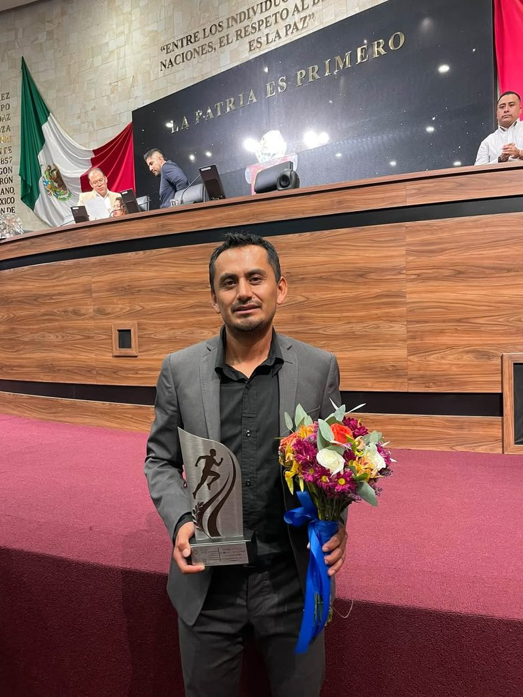

Fundador y entrenador principal
LED. Josafat González Martínez
- Ex seleccionado nacional y medallista de Juegos Centroamericanos y del Caribe.
- Compitió en la Universiada Mundial de Bangkok 2007.
- Premio Estatal al Mérito Deportivo 2026, otorgado por el H. Congreso del Estado de Oaxaca.
- Más de 10 años al frente de Painanis, con medallistas en Nacionales CONADE.